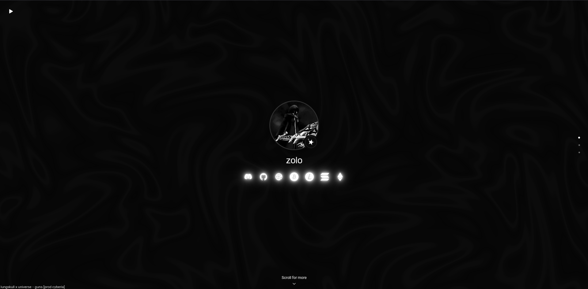
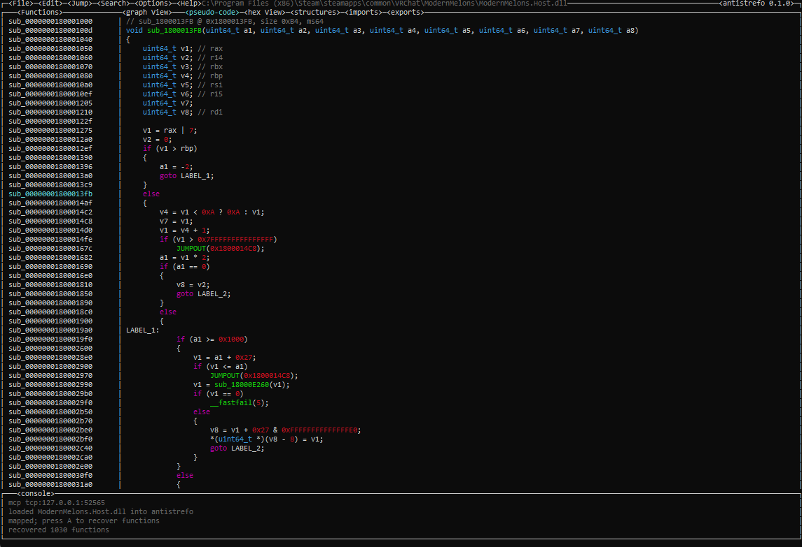
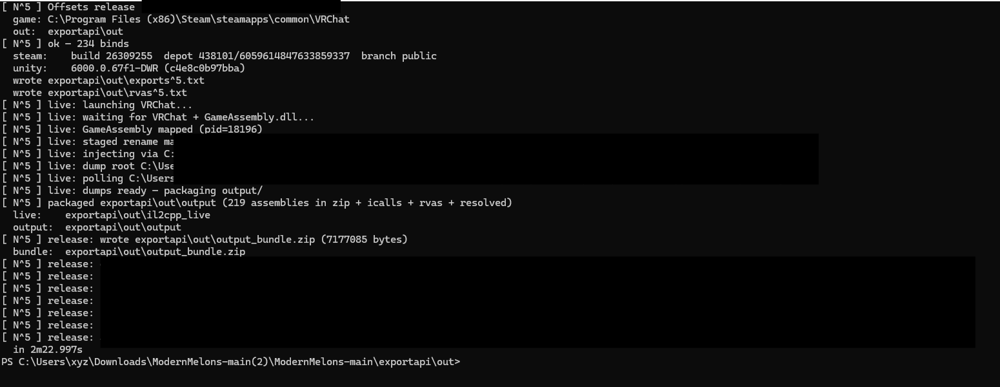

zolo.mov
This site. A single-page biolink with a WebGL background, music, and a short about section.
Built with HTML, CSS, and JavaScript. No framework.


A static analyzer and decompiler for applications, libraries, or whatever you point it at.
Written in C and C++, with Python in the mix. Aimed at reverse engineering work where you need readable structure out of a binary.

Closed-source VRChat dumper. It walks the game’s obfuscated IL2CPP exports and writes a correct mapping, plus a dump of the game assemblies and offsets for game data.
Offsets live on the site. Source stays private.
Closed-source VRChat dumper. It walks the game’s obfuscated IL2CPP exports and writes a correct mapping, plus a dump of the game assemblies and offsets for game data.
Offsets live on the site. Source stays private.